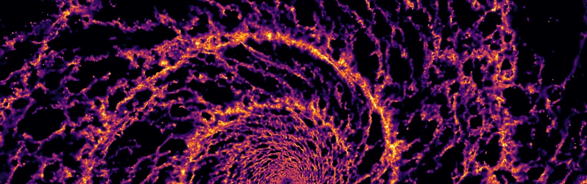
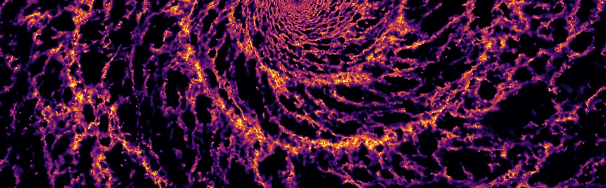
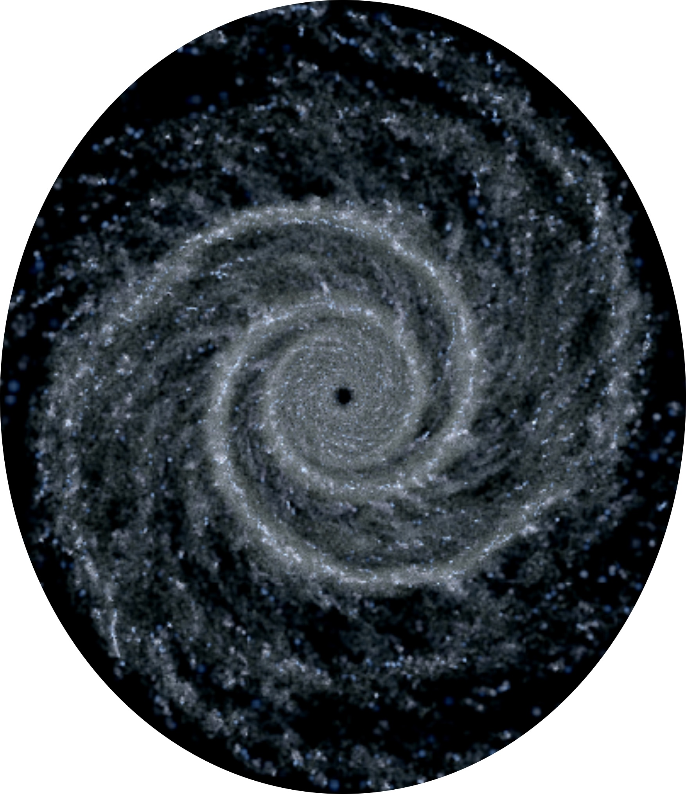

Publications
Below are publications I have co-authored. Papers included are either accepted, submitted, or very near to submission stage (i.e. no nebulous "in preps").
I have not included proceedings, you can find them in the News section if you really want to know.
I keep an updated list on ADS with all peer reviewed articles and sumbitted arXiv pre-prints:
https://ui.adsabs.harvard.edu/public-libraries/QJSnG6ZkSei8Mg-aq1r79g
- Kawata, Kawahara, Gouda, Secrest, Kano, Kataza, Isobe, Ohsawa, Usui, Yamada, Graham, Pettitt, et al., submitted to PASJ. JASMINE: Near-Infrared Astrometry and Time Series Photometry Science.
- Iles, Pettitt, Okamoto, Kawata, submitted to MNRAS. The impact of bar origin and morphology on stellar migration.
- Duran-Camacho, Durate-Cabral, Pettitt, Tress, Clark, Klessen, Bogue, Smith, Sormani, submitted to MNRAS. Self-consistent modelling of the Milky Way structure using live potentials.
- Ge, Wang, Durate-Cabral, Pettitt, Dobbs, Sanchez-Monge, Neralwar, Urqhart, et al., A&A, 675, A119. Large-scale Velocity-coherent Filaments in the SEDIGISM Survey: Association with Spiral Arms and Fraction of Dense Gas
- Ali, Dobbs, Bending, Buckner, Pettitt, 2023, MNRAS, 524, 555. Star cluster formation and feedback in different environments of a Milky Way-like galaxy.
- Sakre, Habe, Pettitt, Okamoto, Enokiya, Fukui, Hosokawa, 2023, MNRAS, 522, 4972. Massive core/star formation triggered by cloud-cloud collision - II. High-speed collisions of magnetized clouds.
- Dobbs, Bending, Pettitt, Buckner, Bate, 2022, MNRAS, 517, 675. The formation of clusters and OB associations in different density spiral arm environments.
- Kawana, Saito, Okumura, Kawabe, Espada, Iono, Kaneko, Lee, Michiyama, Motohara, Nakanishi, Pettitt, Ueda, Yamashita, 2022, ApJ, 929, 100, Multi-wavelength view of the minor merger driven star formation in the nearby LIRG NGC 3110
- Iles., Pettitt, Okamoto, 2022, MNRAS, 510, 3899. Differences in star formation activity between tidally triggered and isolated bars: a case study of NGC 4303 and NGC 3627.
- Colombo, D., Durate-Cabral, A., Pettitt, A. R., Urquhart, J. S., Wyrowski F., Csengeri, T., Schuller, F., Menten, K. M., et al., 2022, A&A, 658, 54. The SEDIGISM survey: The influence of spiral arms on the molecular gas distribution of the inner Milky Way.
- Dobbs, Bending, Pettitt, Bate, 2022, MNRAS, 509, 954. The formation of massive stellar clusters in converging galactic flows with photoionization.
- Sakre, Habe, Pettitt, Okamoto, 2021, PASJ, 73, S385, Trigger of massive core/star formation by cloud-cloud collision: Effect of magnetic field
- Urquhart, Figura, Cross, Wells, Moore, Eden, Ragan, Pettitt, Duarte-Cabral, Colombo, Schuller, Csengeri, Mattern, Beuther, Menten, Wyrowski, Anderson, Barnes, Beltran, Billington, Bronfman, Giannetti, Kainulainen, Kauffmann, Lee, Leurini, Medina, Montenegro, Riener, Rigby, Sanchez-Monge, Schilke, Schisano, Traficante, Wienen, 2021, MNRAS, 500, 3, SEDIGISM-ATLASGAL: Dense Gas Fraction and Star Formation Efficiency Across the Galactic Disk
- Schuller, Urquhart, Csengeri, Colombo, Durate-Cabral, Ginsburg, Mattern, Pettitt, Wyrowski, Anderson, Azagra, Barnes, Beuther, Bronfman, Menten, Moore, Sanchez-Monge, et al., 2021, MNRAS, 500, 3,
The SEDIGISM survey: first data release and overview of the Galactic structure
- Duarte-Cabral, Colombo, Urquhart, Ginsburg, Russeil, Schuller, Agurto, Azagra, Anderson, Barnes, Beltran, Beuther, Bontemps, Bronfman, Csengeri, Dobbs, Dumke, Eden, Finger, Giannetti, Gonzalez, Henning, Hernandez, Kainulainen, Kauffmann, Leurini, Lee, Lopez, Mac-Auliffe, Mattern, Medina, Molinari, Menten, Montenegro-Montes, Moore, Motte, Muller, Muzumdar, Nguyen-Luong, Parra, Perez-Beaupuits, Pettitt, Ragan, Rigby, Sanna, Sanchez-Monge, Schilke, Schisano, Schneider, Suri, Testi, Torstensson, Traficante, Veena, Venegas, Wang, Wienen, Wyrowsk, Zavagno, 2021, MNRAS, 500, 3, The SEDIGISM survey: Molecular clouds in the inner Galaxy
- Quillen, Pettitt, Chakrabarti, Zhang, Gagné, Minchev, 2020, MNRAS, 499, 4, Birth Sites of Young Stellar Associations: Recent Star Formation in a Flocculent Corrugated Disk
- Benincasa, Wadsley, Couchman, Pettitt, Keller, Woods, Grond, 2020, MNRAS, 499, 2, The Anatomy of a Star-Forming Galaxy II: the role of FUV heating in the structure of galaxies
- Pettitt, Dobbs, Baba, Colombo, Duarte-Cabral, Egusa, Habe, 2020, MNRAS, 498, 1, How do different spiral arm models impact the ISM and GMC population?
- Hunt, Johnston, Pettitt, Cunningham, Kawata, Hogg, 2020, MNRAS, 497, 1, The power of co-ordinate transformations in dynamical interpretations of Galactic structure
- Pettitt, Ragan, Smith, 2020, MNRAS, 491, 2 Young stars as tracers of a barred-spiral Milky Way
- Benincasa, Wadsley, Couchman, Pettitt, Tasker, 2019, MNRAS, 486, 4, A tale of two clump masses: a new way to study clump formation in simulations
- Dobbs, Rosolowski, Pettitt, Braine, Crobelli, Sun, 2019 MNRAS, 485, 4, Comparing the Properties of GMCs in M33 from Simulations and Observations
- Salak, Noma, Sorai, Miyamoto, Kuno, Pettitt, Kaneko, Tanaka, Yasuda, Kita, Yajima, Shibata, Nakai, Seta, Muraoka, Kuroda, Nakanishi, Takeuchi, Yoda, Morokuma-Matsui, Watanabe, Matsumoto, Oi, Pan, Kajikawa, Yashima, Komatsuzaki, 2019, PASJ, psz004, CO Multi-line Imaging of Nearby Galaxies (COMING). VII. Fourier decomposition of molecular gas velocity fields and bar pattern speed
- Pettitt, Egusa, Dobbs, Tasker, Fujimoto, Habe, 2018, MNRAS, 480, 3356, The changing GMC population in galaxy interactions
- Espada, Martin, Verley, Pettitt, Matshitaka, Argudo-Fernandez, Randriamanakoto, Hsieh, Saito,
Miura, Kawana, Sabater, Verdes-Montenegro, Ho, Kawabe, Iono, 2018, ApJ, 866, 2, Molecular Gas and Star Formation Properties in Early Stage Mergers: SMA CO(2-1) Observations of the LIRGs NGC 3110 and NGC 232
- Pettitt & Wadsley, 2018, MNRAS, 474, 5645, Bars and spirals in tidal interactions with an ensemble of galaxy mass models
- Price, Wurster, Tricco, Nixon, Toupin, Pettitt, Chan, Laibe, Glover, Dobbs, Nealon, Liptai, Worpel, Bonnerot, Dipierro, Ballabio, Ragusa, Federrath, Iaconi, Roberto, Reichardt, Forgan, Hutchison, Constantino, Ayliffe, Hirsh, Lodato, 2018,
Pub. Astron. Aus., 35, 31, Phantom: A Smoothed Particle Hydrodynamics and Magnetohydrodynamics Code for Astrophysics
- Dobbs, Pettitt, Corbelli, Pringle, 2018, MNRAS, 478, 3793, Simulations of the flocculent spiral M33: what drives the spiral structure?
- Nguyen, Pettitt, Tasker, Okamoto, 2018, MNRAS, 475, 27, The impact of galactic disc environment on star-forming clouds
- Pettitt, Tasker, Wadsley, Keller, Benincasa, 2017, MNRAS, 478, 3793, Star formation and ISM morphology in tidally induced spiral structures
- Schuller, Csengeri, Urquhart, Duarte-Cabral, Barnes, Giannetti, Hernandez, Leurini, Mattern, Medina, Agurto, Azagra, Anderson, Beltran, Beuther, Bontemps, Bronfman, Dobbs, Dumke, Finger, Ginsburg, Gonzalez, Henning, Kauffmann, Mac-Auliffe, Menten, Montenegro-Montes, Moore, Muller, Parra, Perez-Beaupuits, Pettitt, Russeil, Sanchez-Monge, Schilke, Schisano, Suri, Testi, Torstensson, Venegas, Wang, Wienen, Wyrowski, Zavagno,
A&A, 601, A124S, SEDIGISM: Structure, excitation, and dynamics of the inner Galactic interstellar medium
- Dobbs, Price, Pettitt, Bate, Tricco, 2016, MNRAS, 461, 4482, Magnetic field evolution and reversals in spiral galaxies
- Few, Dobbs, Pettitt, Konstandin, 2016, MNRAS, 460, 4382, Testing hydrodynamics schemes in galaxy disc simulations
- Pettitt, Tasker, Wadsley, 2016, MNRAS, 458, 3990, Gas and stellar spiral structures in tidally perturbed disc galaxies
- Pettitt, Dobbs, Acreman, Bate, 2015, MNRAS, 449, 3911, The morphology of the Milky Way - II. Reconstructing CO maps from disc galaxies with live stellar distributions
- Tremblin, Anderson, Didelon, Raga, Minier, Ntormousi, Pettitt, Pinto, Samal, Schneider, Zavagno, 2014, A&A, 568, 4T, Age, size, and position of H ii regions in the Galaxy. Expansion of ionized gas in turbulent molecular clouds
- Pettitt, Dobbs, Acreman, Price, 2014, MNRAS, 444, 919, The morphology of the Milky Way - I. Reconstructing CO maps from simulations in fixed potentials
- Wilson, Colon, Sing, Ballester, Desert, Ehreneich, Ford, Fortney, Lecavelier des Etangs, Lopez-Morales, Morley, Pettitt, Pont, Vidal-Madjar, 2014, MNRAS, 438, 2395, A search for methane in the atmosphere of GJ 1214b via GTC narrow-band transmission spectrophotometry

CV
Here is my CV if you are so inclined to read [accurate as of April 2020].
Thesis
Here is my entire thesis, hosted on Open Research Exeter. Be warned, it is quite a big file! Alternatively feel free to download the individual chapters if you'd prefer:
- Chapter 1: Introduction focused on the structure of disc galaxies and the Milky Way.
- Chapter 2: Methods chapter discussing smoothed particle hydrodynamics and inter-stellar medium physics.
- Chapter 3: Investigation using fixed potentials to reproduce arm/bar structures seen in the Milky Way.
- Chapter 4: Radiative transfer maps of the simulations in Chapter 3, and comparison to observations.
- Chapter 5: Investigation use live N-body stellar disc to create spiral and barred Milky Way-like features.
- Chapter 6: Conclusions and future work.
Codes

Below are codes and some invaluable software I have used in my work, most of which are numerical hydrodynamics codes.
PHANTOM - D. Price's SPH code (NDSPMHD is good too).
GASOLINE - J. Wadsley's SPH code.
GIZMO - P. Hopkin's hydrodynamics code.
GADGET2 - V. Springel's SPH code.
TORUS - A 3D AMR radiative transfer code by T. Harries (not public, yet).
ENZO - A grid-based hydrodynamics code.
SPLASH - D. Price's visualisation software for SPH data.
YT - A versatile python-based analysis package for SPH/AMR data.
glnemo2 - Interactive viewer for astrophysical codes by J. Lambert.